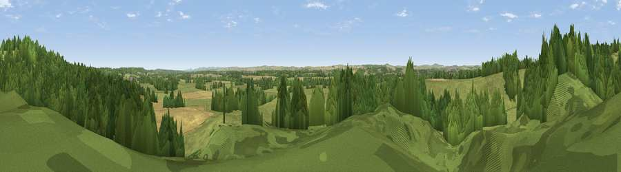

Viewpoint near West Stafford
#25483 in England · top 55% of its area beats it · near West Stafford · path 164 mWhere it is
The exact computed spot (SY 73375 91425). Click the marker for map links.
Public access: the nearest public right of way is about 164 m away — the final stretch may cross private land. Computed from Natural England's CRoW access layer and OpenStreetMap rights of way — not the legal definitive map. Always verify locally.
The view, rendered

A 360° render of this exact spot computed from the terrain model, tree cover and land cover — summer colours, afternoon light, calibrated against photographs of famous viewpoints. Real trees, hedges and buildings will differ in detail.
The panorama
Grey silhouette: terrain skyline in each direction (720 bearings, Earth curvature and refraction included). Dashed green: skyline with trees (+15 m) and buildings (+8 m) as obstacles. Blue strip: how far the ground is visible on each bearing.
Where the view opens
Wedge length = distance to the farthest visible ground on that bearing (vegetation-aware). Rings at 10, 25 and 50 km.
What fills the view
51% woodland · 37% grassland · 11% cropland ·
Angular shares of the visible panorama (visual magnitude), not map area. Landscape diversity 0.43 (0–1 Shannon).
Key numbers
More beautiful places nearby
The staircase of upgrades: each row has a higher view potential than everything closer. Driving times are estimates from straight-line distance, calibrated against real road routing — check an actual route before setting out.
| Place | Direction | Drive | Score |
|---|---|---|---|
| Viewpoint near Tincleton | ENE · 5 km | ~11 min | 46.5 |
| Viewpoint near Piddlehinton | NW · 5 km | ~12 min | 47.2 |
| Viewpoint near Tincleton | E · 5 km | ~12 min | 51.9 |
| Viewpoint near Sutton Poyntz | SSW · 7 km | ~14 min | 65.6 |
| East Hill | SSW · 7 km | ~15 min | 79.6 |
| Viewpoint near Sutton Poyntz | SSW · 8 km | ~16 min | 79.9 |
| Viewpoint near Owermoigne | SSE · 10 km | ~19 min | 81.0 |
| Viewpoint near Chaldon Herring | SSE · 10 km | ~20 min | 82.9 |
50.72183, -2.37854 · source: screening · position refined by local search. Computed location — check access rights before visiting.